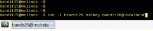
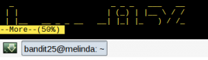

O bandit é um dos muitos interessantíssimos challenges disponíveis no Overthewire que eu e o fallc0nn começamos a fazer há algum tempo.
Nesse post vamos postar o walkthru desse challenge.
Level 0
O level 0 é extremamente simples. Basta logar no servidor e dar um cat no arquivo readme
ssh bandit0@bandit.labs.overthewire.org cat readme
e usar a senha encontrada para dar ssh para o próximo level
ssh bandit1@localhost
Level 1
O level 1 exige um conhecimento básico de linux, mas que muita gente não sabe.
Ao se logar, você verá um arquivo chamado “-“. Isso mesmo, é só o famoso dash, ou traço.
De cara, todos tentariam dar um cat – ou cat -, mas não funcionaria. Alguns programas do linux adotam uma convenção de que o – sozinho significa stdout. Assim, temos duas formas de resolver o problema:
cat ./- # ou cat < -
e usar a senha encontrada para dar ssh para o próximo level
ssh bandit2@localhost
Level 2
O 2 não vale nem a pena perder tempo. É um arquivo com espaços no filename, onde você deveria escapar os espaços para conseguir dar o cat.
Porém, o tab completion faz isso por você.
cat spaces\ in\ this\ filename
novamente, use a senha para logar como bandit3.
Level 3
Como o dois, bem simples. Uma pasta com um arquivo oculto dentro.
cat .hidden
Agora é só fazer o login como bandit4
Level 4
O 4 também tem uma pegadinha que pouca gente sabe.
Tratar arquivos que começam com dash (-) tem uma particularidade no linux. Quando você usa um comando e ele vê o caractere -, ele espera que você esteja começando a setar argumentos do programa, como “ls -lA” ou “cat -vet”.
Portanto, existe uma forma não tão conhecida de avisar ao programa em questão que você acabou de informar seus argumentos, que é utilizando dois traços (–).
Nesse nível temos os seguintes arquivos:
-file00 -file01 -file02 -file03 -file04 -file05 -file06 -file07 -file08 -file09
e se você tentar dar um simples cat em qualquer um deles, dará erro.
Então, deve utilizar a dica dos dois traços. Mas antes disso, você vai perceber que dentro da maioria dos arquivos existem strings ininteligíveis. Para evitar ter que dar cat em todos, faça:
$ file -- * -file00: data -file01: data -file02: data -file03: data -file04: data -file05: data -file06: data -file07: ASCII text -file08: data -file09: data
e assim saberá que a senha está no arquivo “-file07”.
cat -- -file07 # ou cat < -file07
Level 5
O level 5 é o mais chato até aqui
Basta dar um ls -R para ver que existem dezenas de pastas e subpastas e arquivos… demoraria horas para encontrar a senha olhando um por um.
Vou economizar na explicação dos problemas, pois todos já encontramos até aqui, e focar na solução:
A melhor forma que encontrei aqui foi listar todos os arquivos com find -type f, adicionar aspas em volta deles, para evitar problemas com espaços, com sed ‘s/^\|$/\”/g’ e jogar o output para o comando file — (lembram dos dois traços?).
Porém, a lista de arquivos é imensa. Como até aqui já aprendemos que a senha vem num arquivo texto, podemos usar grep ASCII na saída do file –, assim nosso universo foi reduzido a poucos arquivos.
find -type f | sed 's/^\|$/\"/g' | xargs file -- | grep ASCII
Com essas informações, tudo que precisamos é, depois do pipe, dar um cut, fazer novamente o truque das aspas e jogar o output para um xargs head -1
find -type f | sed 's/^\|$/\"/g' | xargs file -- | grep ASCII | cut -f1 -d: | sed 's/^\|$/\"/g' | xargs head -1 | less
Se você prestou atenção no formato das senhas até agora, vai identificar só de olhar!
MAS
isso tudo é pra quem é desatento, e num CTF toda informação é valiosa.
Na página do challenge, no item “level 5 – level6” tem uma dica de ouro:
“The password for the next level is stored in a file somewhere under the inhere directory and has all of the following properties: – human-readable – 1033 bytes in size – not executable”
Então basta fazer:
$ find -size 1033c | xargs cat
e correr para o abraço. E, a partir de agora, ficar olho no site!
Level 6
Seguindo as intruções do site, temos os atributos do arquivo:user: bandit7, group: bandit6, size: 33 bytes.
find / -user bandit7 -group bandit6 -size 33c | xargs cat
Level 7
Instruções no site!
grep millionth data.txt
Level 8
A senha está no arquivo data.txt e é a única linha que aparece apenas uma vez
sort data.txt | uniq -u
Level 9
A senha está em uma das poucas linhas ‘legíveis’ do arquivo data.txt que começam com algumas vezes o caractere “=”
Para esse nível vamos usar pela primeira vez o comando strings
strings data.txt | grep -E "^=+"
Level 10
A senha está no arquivo data.txt, codificado em base64
base64 -d < data.txt
Level 11
O level 11 é a conhecida cifra de césar, algoritmo de rotação de caracteres.
tr a-zA-Z n-za-mN-ZA-M < data.txt
Level 12
O 12 é bem chatinho. Se você der um cat no arquivo vai ver que se trata de um hexdump de algum arquivo.
Muita gente ao fazer esse nível jogava o output para algum arquivo e dava um file, para depois usar algum outro comando, salvar em outro arquivo e dar outro file, assim sucessivamente.
Mas como expliquei no level 1, podemos usar o – em alguns programas simbolizando o stdout. Então basta fazer o seguinte:
bandit12@melinda:~$ xxd -r data.txt | file - /dev/stdin: gzip compressed data, was "data2.bin", from Unix, last modified: Fri Nov 14 10:32:20 2014, max compression bandit12@melinda:~$ xxd -r data.txt | zcat | file - /dev/stdin: bzip2 compressed data, block size = 900k bandit12@melinda:~$ xxd -r data.txt | zcat | bzcat| file - /dev/stdin: gzip compressed data, was "data4.bin", from Unix, last modified: Fri Nov 14 10:32:20 2014, max compression bandit12@melinda:~$ xxd -r data.txt | zcat | bzcat| zcat| file - /dev/stdin: POSIX tar archive (GNU) bandit12@melinda:~$ xxd -r data.txt | zcat | bzcat| zcat| tar xO | file - /dev/stdin: POSIX tar archive (GNU) bandit12@melinda:~$ xxd -r data.txt | zcat | bzcat| zcat| tar xO | tar xO | file - /dev/stdin: bzip2 compressed data, block size = 900k bandit12@melinda:~$ xxd -r data.txt | zcat | bzcat| zcat| tar xO | tar xO | bzcat | file - /dev/stdin: POSIX tar archive (GNU) bandit12@melinda:~$ xxd -r data.txt | zcat | bzcat| zcat| tar xO | tar xO | bzcat | tar xO | file - /dev/stdin: gzip compressed data, was "data9.bin", from Unix, last modified: Fri Nov 14 10:32:20 2014, max compression bandit12@melinda:~$ xxd -r data.txt | zcat | bzcat| zcat| tar xO | tar xO | bzcat | tar xO | zcat | file - /dev/stdin: ASCII text bandit12@melinda:~$ xxd -r data.txt | zcat | bzcat| zcat| tar xO | tar xO | bzcat | tar xO | zcat | cat The password is 8ZjyCRiBWFYkneahHwxCv3wb2a1ORpYL
Level 13
Fácil, né?
ssh -i sshkey.private bandit14@localhost
Depois de logar, não se esqueça de pegar a senha
cat /etc/bandit_pass/bandit14
Level 14
A dica no site diz que se enviarmos a senha do nível atual na porta 30000 do servidor, receberemos a senha para o proximo.
echo "4wcYUJFw0k0XLShlDzztnTBHiqxU3b3e" | netcat localhost 30000
Level 15
O 15 é igual ao 14, mas via openssl
echo BfMYroe26WYalil77FoDi9qh59eK5xNr | openssl s_client -connect localhost:30001 -ign_eof
Level 16
Trabalhosa! O site informa que você deve sumeter a senha atual em uma porta no localhost entre 31000 e 32000, sem saber qual é.
Recomenda que você primeiro veja quais portas estão abertas (nmap?) pra depois saber quais falam SSL e quais não falam, e então submeter a senha. Eu prefiro ganhar tempo:
for i in {31000..32000}; do
netcat -zv localhost $i 2>/dev/null && {
echo porta $i aberta;
echo "cluFn7wTiGryunymYOu4RcffSxQluehd" | timeout 2 openssl s_client -connect localhost:$i -ign_eof ;
};
done
Assim ele já vai enviar a string via SSL pra todas as portas abertas, depois basta você olhar o buffer do seu terminal pra encontrar a resposta.
Nesse caso, temos como retorno uma chave privada que deve ser usada para acessar o próximo nível. O problema é que não temos permissão de escrita no diretório.
Tentei salvar a key numa variavel e usar como file descriptor, mas pelo visto o sistema não permite. A solução, então, é criar no /tmp/.
mkdir -p /tmp/n00bsb/ cd /tmp/n00bsb/ vi key #(cole o conteúdo da key no arquivo) ssh -i key bandit17@localhost
Level 17
A dica no site diz que a senha está na única linha que é diferente entre os arquivos passwords.new e passwords.old
diff passwords.*
Quando você tentar se logar no próximo level, vai ter uma surpresa…
Level 18
OOOOH! Não dá pra logar!!
Mas a essa altura do campeonato você já sabe a solução. A dica no site diz que a senha está no arquivo readme do homedir do usuário
ssh bandit18@localhost cat readme
Level 19
Bem simples, nem sei porque está no final
./bandit20-do cat /etc/bandit_pass/bandit20
Level 20
Nesse level o enunciado diz que é preciso abrir dois shells pra passar. Mas como hackinagem pouca é bobagem, vou ensinar aqui como fazer com um shell só!
Seguindo o enunciado, teoricamente você deveria abrir um listener com netcat, por exemplo
nc -l 12345
Depois abrir outra sessão ssh, executar
./suconnect 12345
Então, voltar ao primeiro terminal e submeter a key via listener, para que o suconnect enviasse a resposta de volta
Muito trabalho, não?
Aqui o negócio é simples.
(sleep 10; echo GbKksEFF4yrVs6il55v6gwY5aVje5f0j) | nc -l 12345 & [1] 8230 ./suconnect 12345 Read: GbKksEFF4yrVs6il55v6gwY5aVje5f0j Password matches, sending next password gE269g2h3mw3pwgrj0Ha9Uoqen1c9DGr
Deu pra entender? Na primeira linha abrimos o netcat escutando na porta 12345 e enviamos via pipe pra ele o comando agrupado entre parenteses para aguardar 10 segundos e depois enviar a key, já enviando tudo para background com o & no final.
Depois disso, é só digitar o ./suconnect 12345 em menos de 10 segundos e aguardar o tempo setado que a senha vai aparecer facilmente pra você!
Level 21
Dentro da pasta /etc/cron.d/ tem vários cronjobs de vários usuários. Nosso próximo level é o 22, nele que devemos focar.
cat /etc/cron.d/cronjob_bandit22 * * * * * bandit22 /usr/bin/cronjob_bandit22.sh &> /dev/null cat /usr/bin/cronjob_bandit22.sh #!/bin/bash chmod 644 /tmp/t7O6lds9S0RqQh9aMcz6ShpAoZKF7fgv cat /etc/bandit_pass/bandit22 > /tmp/t7O6lds9S0RqQh9aMcz6ShpAoZKF7fgv
Analisando o código, você pode ver que a senha do bandit22 está sendo enviada para aquele arquivo de nome estranho no /tmp
É só dar um cat nele!
cat /tmp/t7O6lds9S0RqQh9aMcz6ShpAoZKF7fgv Yk7owGAcWjwMVRwrTesJEwB7WVOiILLI
Level 22
O início é igual ao level 21. Você deve verificar o cronjob do bandit23.
#!/bin/bash myname=$(whoami) mytarget=$(echo I am user $myname | md5sum | cut -d ' ' -f 1) echo "Copying passwordfile /etc/bandit_pass/$myname to /tmp/$mytarget" cat /etc/bandit_pass/$myname > /tmp/$mytarget
Um poquinho de leitura de código resolve seu trabalho:
myname=bandit23 cat /tmp/$(echo I am user $myname | md5sum | cut -d ' ' -f 1) jc1udXuA1tiHqjIsL8yaapX5XIAI6i0n
Level 23
Mesma coisa no início, olho no cronjobs_bandit24.
Você pode ver no script que ele executa que ele procura arquivos em uma determinada pasta e executa tudo que estiver la a todo minuto
Então é simples!
cd /var/spool/bandit24 echo "cat /etc/bandit_pass/bandit24 > /tmp/n00bsb.bandit24" > script.sh chmod +x script.sh # agora basta esperar virar para o próximo minuto e cat /tmp/n00bsb.bandit24 UoMYTrfrBFHyQXmg6gzctqAwOmw1IohZ
Level 24
Brute Force!
for i in {0000..9999}; do
echo "UoMYTrfrBFHyQXmg6gzctqAwOmw1IohZ $i"; done | netcat localhost 30002 | grep bandit25
Dentro do loop geramos a lista com a senha do level 24 combinada com todas as combinações de 4 dígitos possíveis, e depois de pronta, jogamos essa lista via pipe pro netcat.
Pode ser preciso rodar o comando algumas vezes, porque aparentemente o daemon não aguenta a pressão, mas é só insistir duas ou três vezes q vai dar certo.
Level 25
Essa eu apanhei muito. O shell do usuário bandit26 parece ser diferente, e é.
Para passar desse nível, você deve redimensionar seu terminal, conforme a imagem abaixo:

Ao dar enter, você vai se deparar com um "more"

O truque aqui é dar fallback do more para o vi!
Digite esc, depois v.
O arquivo será aberto no vi. Agora você só precisa digitar esc, e depois: e: /etc/bandit_pass/bandit26 e enter.
O arquivo bandit26 aparecerá com a senha.
5czgV9L3Xx8JPOyRbXh6lQbmIOWvPT6Z
Como o level 27 ainda não existe, acabamos de bater o desafio BANDIT do Overthewire!!